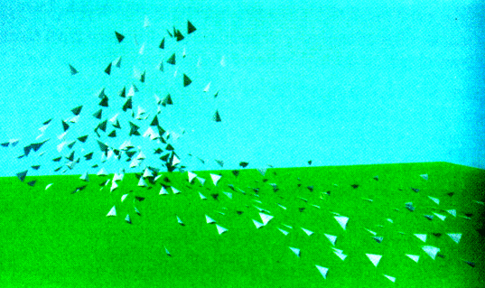
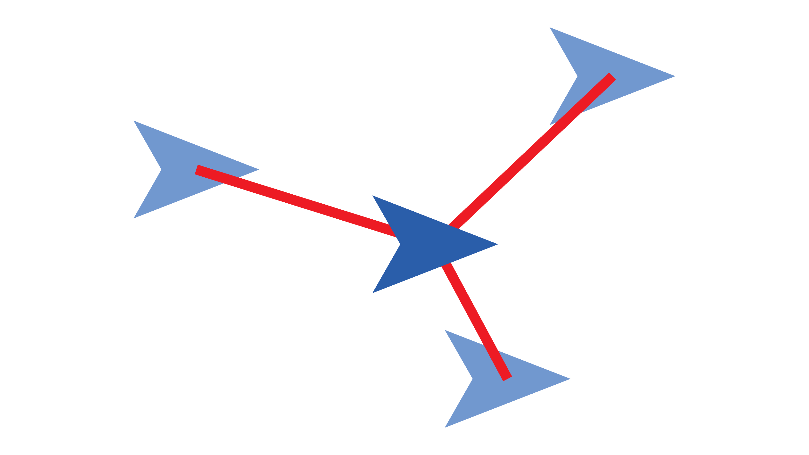
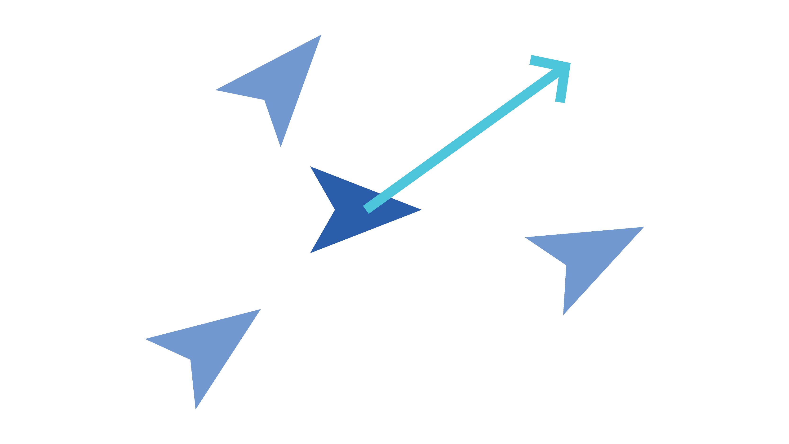
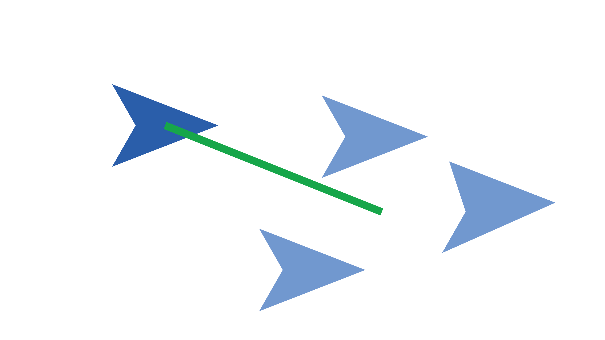
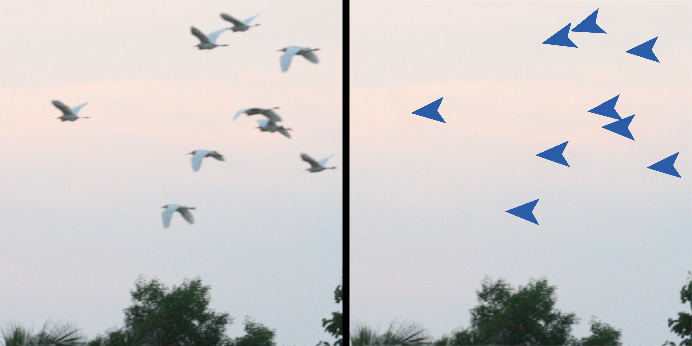

Introduction
If you sit down and watch a flock of birds soar through the sky, you might notice that there are no collisions, no singular individual leading the pack, but somehow they can navigate their environment as a group. So how do they manage to maintain a level of structure and direction in relation to one another? They follow some simple rules.
Boid Simulation
In 1986, computer graphics expert Craig Reynolds created simulated birds called Boids, meaning "bird-oid" or bird-like objects. Each individual boid in the simulation represents a single bird. His goal was to design a simulation that accurately recreates the group motion of a flock of birds by giving each individual boid the same three rules that birds seem to follow.

Fig. 1: A frame from Craig Reynolds' original 1987 boid simulation, one of the first attempts to model bird flocking behavior in computer graphics.
The Three Rules
Separation
Each boid maintains a certain distance between itself and its neighbors. If one boid inches too close to another, both will correct themselves and veer away to avoid a collision. This prevents the group as a whole from overlapping or converging into one spot and collapsing into a single point in space.

Alignment
Each boid observes the direction its neighbors are moving and adjusts its own direction to match the average of those around it. No singular boid knows where to go on its own; they simply go with the flow of their neighbors. This allows the flock to move fluidly and dynamically through environments. If a boid near the edge detects an obstacle, it steers away, which signals nearby boids to do the same through a ripple effect.

Cohesion
Each boid calculates the average point between a number of nearby neighbors and moves toward it. Unlike rule 2, which is about direction, rule 3 is entirely about position. This final rule attempts to keep the larger group together and prevent boids from drifting off into smaller, disconnected groups when an obstacle forces them apart.

Emergent Behavior
Each boid is limited to seeing a small, local group directly around itself, and they are unable to see or reference the flock as a whole. Yet, they somehow manage to create lifelike group behaviors that mimic the actions of real world animals. In practice, the flock is smarter and more capable than any individual boid within it.
This phenomenon, when simple rules come together to create complex behavior, is called emergence. Boids are one of the clearest examples of it.
Emergence: complex group behavior arising from simple individual rules, with no central control.
How Are They Used Today?

Fig. 2: A cropped image of a real flock of birds (left) alongside a group of boids laid over the image, representing a similar behavior (right).
Although Reynolds' original implementation was designed for recreating birds, these types of simulations have been used to estimate the movement patterns of birds, fish, land animals, and even crowds of people. In video games they are used to create large groups of animals and enemies, while in animation, boids create the lively wildlife of films and television. The field of robotics uses them to coordinate groups of physical, autonomous robots and drones. Not only that, but the technology has even been used to predict how crowds move through public spaces in architectural design and urban planning.
- Biology Estimating movement patterns of birds, fish, and land animals
- Video Games Generating large groups of animals and enemies
- Animation Creating the lively wildlife of films and television
- Robotics Coordinating groups of physical, autonomous robots and drones
- Urban Planning Predicting how crowds move through public spaces
You've seen the rules. Now explore them.
Each slider adjusts a property of every individual boid — there are no larger group rules, only individual ones. The emergent behavior you see is the result of every boid independently following the same rules.
How close is too close: the personal space each boid tries to keep from its neighbors
How far each boid can "see": only boids within this distance count as neighbors
Individual randomness: how often a boid ignores the group and drifts on its own before being pulled back
Sources
- Boid Project, Texas A&M Obstacle examples and simulation coding
- Birds at Sunset, Vietnam — Wikimedia Commons Fig. 2: flock of birds photograph
- Coding Adventure: Boids by Sebastian Lague Fig. 1: Early boid simulation, ideas for visualization
- Flocks, Herds and Schools by Craig Reynolds (1987) The original boid paper
- Stanford: Modeling Natural Systems Real-world uses and visualization ideas
- Wikipedia: Boids Overview and real-world applications